순서가 있는 데이터, 세 걸음
통계에서 신경망으로, 신경망에서 언어로 — 같은 문제를 세 번 푼다.
순서가 있는 데이터는
무엇이 다른가?
시계열은 순서가 있는 데이터다. 지금까지 다룬 데이터에는 없던 순서라는 차원이 하나 더 있다.
시간 단위로 값이 있으면 전부 시계열이다
Time Series Analysis
시계열이 처음 다뤄진 자리. 스마트시티 IoT 센서가 그대로 여기다.

가장 많이 연구된 시계열. 오늘 예시의 절반이 여기서 온다.
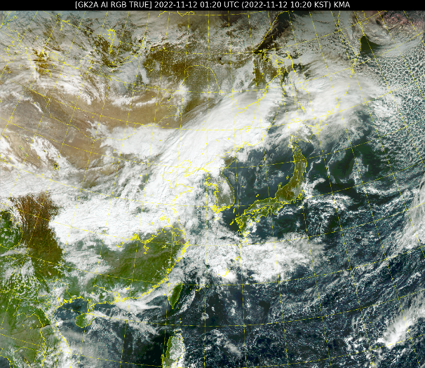
계절성이 뚜렷한 시계열의 교과서.
도시 쪽이면 인구 추계와 부동산 거래가 바로 이것이다 — 도시기본계획의 계획인구가 시계열 예측 결과다.
백색잡음
White Noise
같은 정규분포에서 뽑은 랜덤값이 그냥 이어진 것. 기억이 없다.


확률보행
Random Walk
data[-1] + 가 붙는다
직전 값에서 랜덤하게 움직인다. 백색잡음은 0에서 움직였다.
정상 확률 과정
대표 시계열 ③ · Stationary Process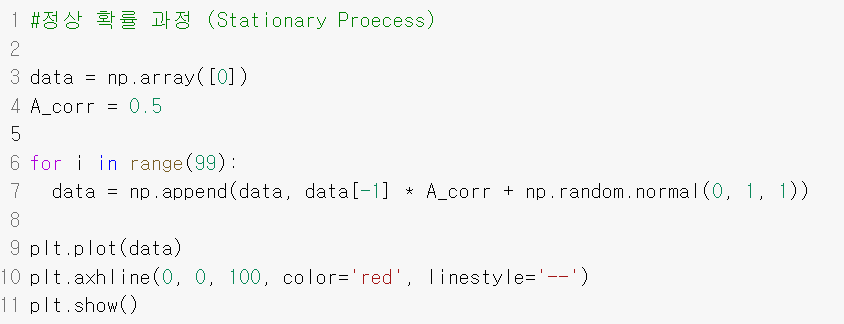
평균도 분산도, 떨어진 간격에 따른 관계도 구간마다 같다.
3일 전 값이 영향을 주다가 어느 날부터 6일 전 값이 영향을 주면 — 분석 대상이 아니다.
셋은 같은 식이다
같은 난수 수열로 그렸다 — 다른 건 계수 하나뿐0 을 중심으로만 흔들린다 — 기억이 없다
흘러가되 0 으로 되돌아온다
0 으로 끌어당기는 힘이 없다 — 어디로든 흘러간다
“어디를 잘라도 같다” 를 재 본다
같은 세 계열의 20 구간 이동평균둘이 겹쳐 보일 만큼 0 에 붙어 있다. 어느 구간을 잘라도 평균이 같다.
구간마다 평균이 다르다. 떠내려간다.
ADF 검정이 하는 일이 이 그림을 숫자로 재는 것이고, 다음 장 ARIMA 의 I 가 하는 일이 빨간 선을 파란 선으로 만드는 것이다.
ARIMA (p, d, q)
AutoRegressive Integrated Moving Average · Box–Jenkins 로 정상성 확인 후 사용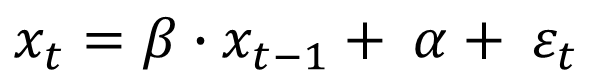
몇 시점 전 값까지 끌어오나
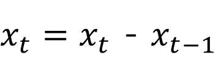
정상으로 만들려고 몇 번 차분했나

몇 시점 전 오차까지 끌어오나
계절성을 더하면 SARIMA. 생산 관리·수요 예측에서 지금도 현역이다 — 직관적이기 때문이다.
겹쳐서 만들어진 것은 아닐까
Fourier Transform · 주파수 분석, 음성 인식에 활용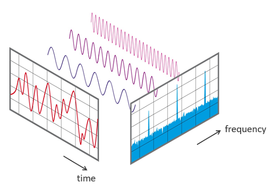

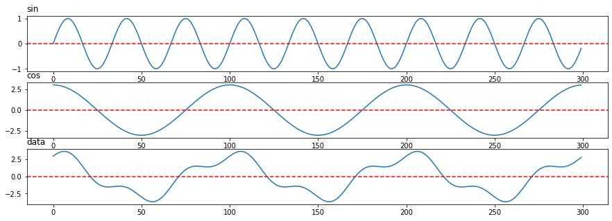
비슷하게 들리면 가까운 자리에 떨어진다
초기 음성 인식이 실제로 한 일이름을 두세 번 녹음시킨 이유가 이것이다 — 덩어리를 만들려고.
남이 같은 말을 해도 다른 자리에 떨어졌다. 뒤에 목소리로 화면 잠금을 푸는 기능까지 나왔다.
한 낱말은 조각 수십 개의 순서다. 그 순서를 다루려고 쓴 것이 다음 장이다.

보이지 않는 상태를
가정한다
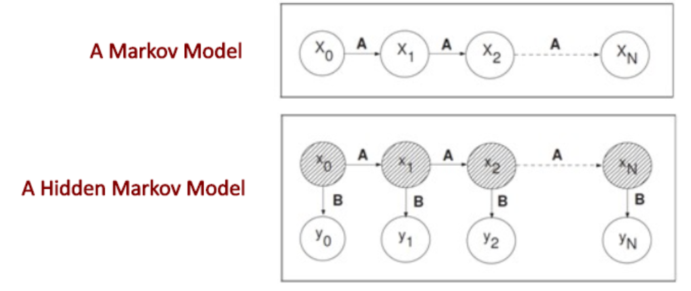
학습 대상은 두 개의 표 — 상태 사이의 전이 확률과 그 상태에서 무엇이 보일 확률.
진짜로 “해가 떴다”를 알아내는 게 아니다. 그냥 벡터 숫자로 정한다. 그런데 그것만으로 예측력이 올라갔다.
“어디로 튈지는 몰라도 얼마나 튈지는 안다”
Brownian Motion주가를 확률보행으로 보면, 방향을 못 맞혀도 변동성이 범위 안에 있는 한 가격을 계산할 수 있다.
ELS 는
이 계산이다
단, 아래쪽 기준선 밑으로 내려가면 한 푼도 못 드립니다.
— 그래서 지금 얼마를 받아야 하나?
받은 돈으로 헤지 거래를 한다. 오르면 사고 내리면 판다.
계속 손해 보는 것 같지만, 그래야 어느 쪽으로 가든 약속을 지킬 수 있다.


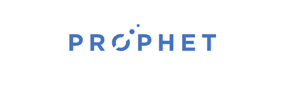
추세 + 계절 +
휴일
메타가 비즈니스 데이터에 맞게 만든 시계열 예측 라이브러리.
facebook.github.io/prophet
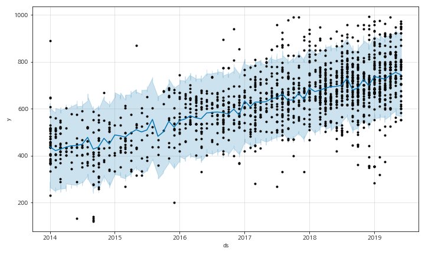
한 시점에
값이 여러 개
아파트 거래는 같은 날 여러 건이 서로 다른 가격으로 발생한다.
statistics > networks
같은 문제를 뉴럴넷으로
정상성을 만들고 식을 세우는 방식에서, 가중치 한 벌로 순서를 훑는 방식으로
데이터가 바뀌면 층을 바꾼다
모든 입력이 모든 뉴런에
필터 하나가 공간을 이동
가중치 하나가 시간을 이동
CNN 이 필터 하나로 공간을 훑었듯, RNN 은 가중치 하나로 시간을 훑는다. 발상이 같다.
KOSPI 지수
노트북에서는 yfinance 로 직접 받아 온다.

한 칸씩 밀면서 만든다
과거 n 일 입력 → 다음 1 일 출력
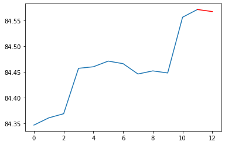

빨간 꼬리가 예측할 다음 한 칸이다. 이렇게 잘라 두면 우리가 아는 지도학습이 된다.
펼쳐 보면
같은 가중치가 끝까지 간다W₁ 도 W₂ 도 b 도 전 구간에서 같은 값이다. 시계열이 60이든 600이든 가중치는 늘지 않는다.
같은 가중치에 여러 시계열을 넣어 본다
개념 예시 — 실제 학습 결과가 아니다움직임이 닮은 계열끼리 두 숫자의 부호와 크기가 닮았다. 우리가 그렇게 시킨 적은 없다.
두 숫자가
지도가 된다
마지막 히든 스테이트를 좌표로 찍었더니 움직임이 닮은 계열끼리 같은 사분면에 모였다.
한 시점에
벡터를 통째로
하루치를 200 차원으로 한 번에 넣으면 종목끼리 주고받는 영향까지 같이 학습된다.
관절 각도 · 토크 · 가속도를 한 시점의 벡터로 묶는다. 몸 전체가 한 시계열이 된다.
멀어질수록 흐려진다
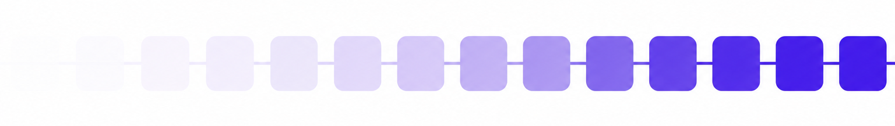
같은 가중치를 반복해서 쓰는 구조라 시점 수에 제한이 없다.
매 시점 h 가 새 입력과 섞여 다시 tanh 를 지난다. 옛 정보의 지분이 스텝마다 곱해져 줄어든다.

이전 기억을 쓸 것인가
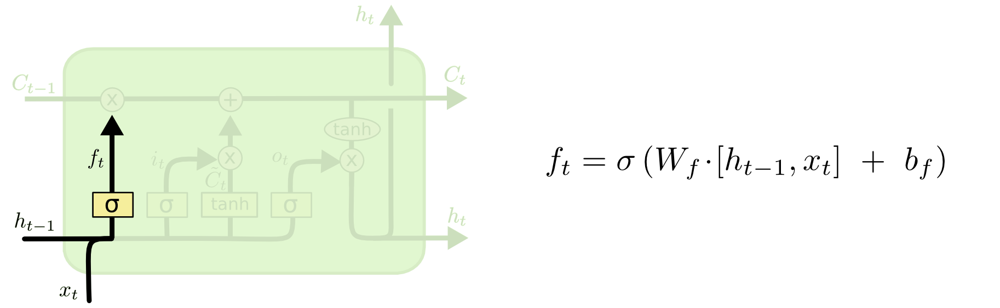
시그모이드로 0 또는 1 을 만들어 이전 cell state 를 쓸지 말지 결정한다.
0 이면 곱해져서 장기 기억이 통째로 꺼진다.
새 정보를 더할 것인가

tanh 가 “무엇을 더할지”를 만들고, 시그모이드 가 “더할지 말지”를 정한다.
두 개가 곱해져서 위로 올라간다.
장기 기억이 갱신된다
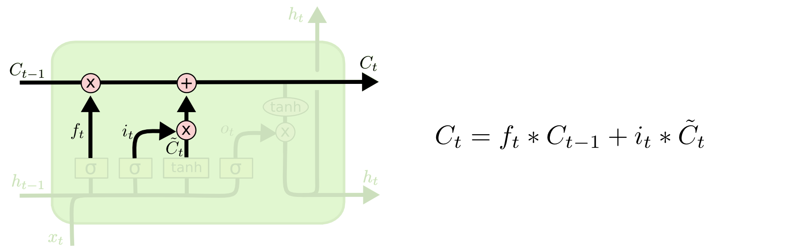
(이전 기억 × forget) + (새 후보 × input) = 이번 기억.
위를 가로지르는 이 선이 장기 기억의 고속도로다 — 거의 손대지 않고 흘려보낸다.
단기 기억을 뽑아낸다
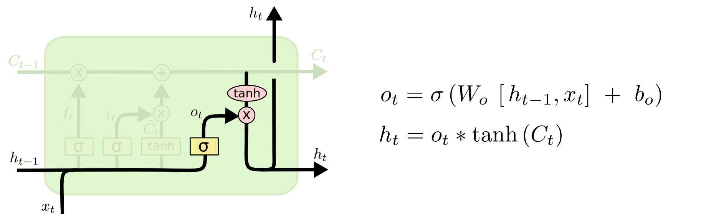
갱신된 장기 기억을 tanh 로 누른 뒤 output gate 와 곱한다.
이 값이 다음 칸으로도 가고, 예측에도 쓰인다.
시그모이드는
스위치다
거의 0 또는 1을 가리킨다. 곱하면 통과 / 차단이 된다.
5부 MoE 의 라우터도 정확히 같은 아이디어다.
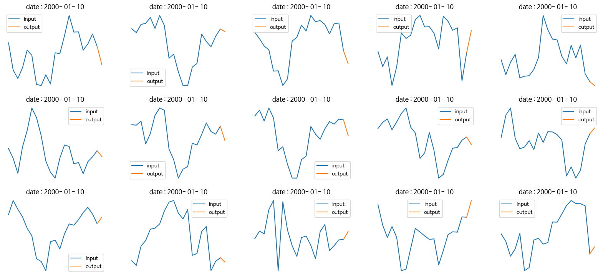
그림으로는
큰 차이가 없다
결국 직전 랙으로 다음 한 칸을 예측하는 일이기 때문이다.
뉴럴 네트워크에서 가장 강력한 건 언제나 중간의 벡터였다.
GRU — 게이트를 둘로 줄이면
Gated Recurrent Unit · 2014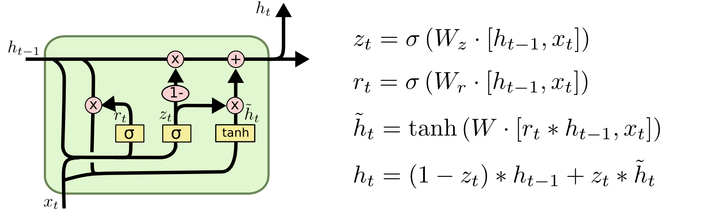
Hidden State 하나로 처리
이전 히든이 참여할지 결정
이전과 이번을 몇 대 몇으로 합칠지
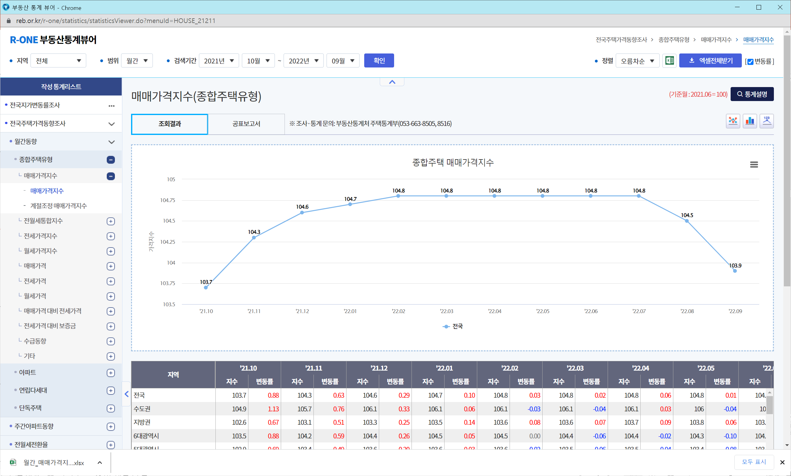
주택매매
가격지수

1986년부터의 지정통계. 월간·주간으로 아파트·단독·연립 지수를 제공한다.
reb.or.kr — R-ONE 부동산통계정보
종로구 지수로 해 보면
학습 2003.11–2020.12 · 검증 2020.1–2021.5 · 12개월 입력 → 13개월 예측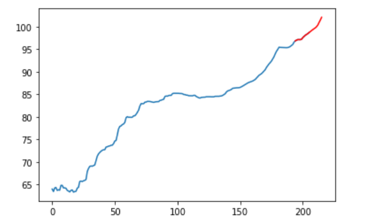


지수는 주가보다 훨씬 매끄럽다 — 그래서 결과도 훨씬 그럴듯해 보인다. 그만큼 쉬운 문제이기도 하다.
한 칸에 25개 지역을 넣으면
서울 25개 시군구 가격지수 · 다변량 입력
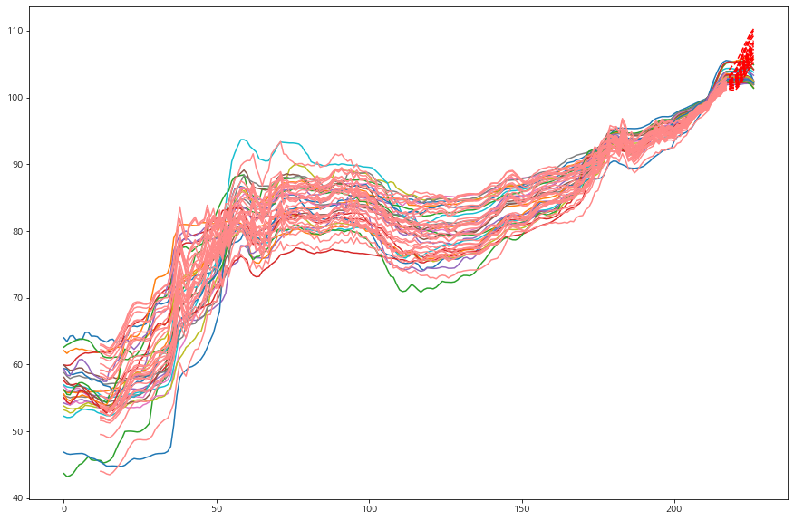

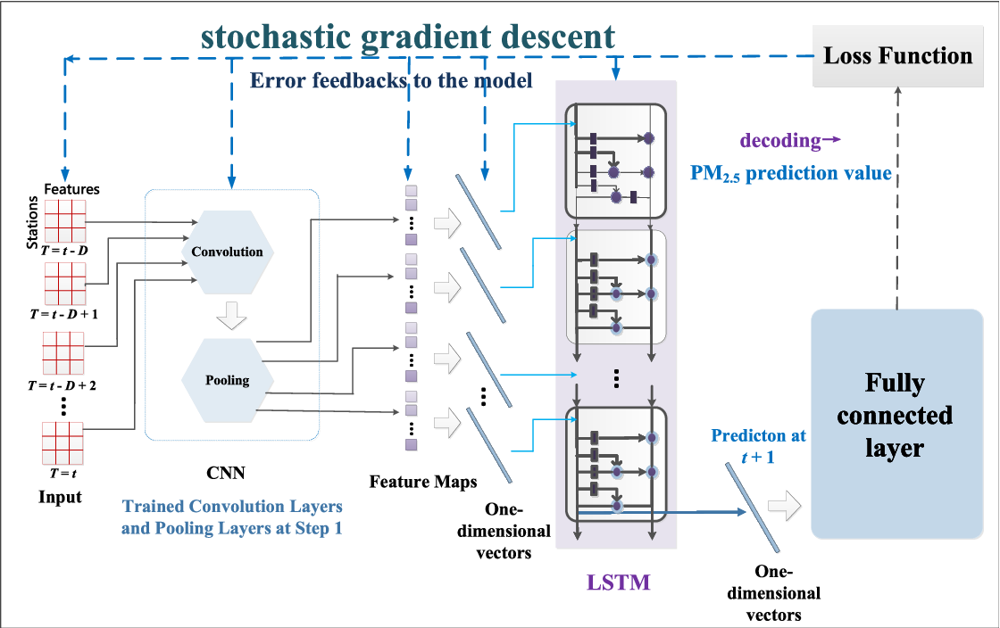
이미지를
시계열의 한 칸으로
CNN 에게 “무엇이냐”를 묻지 않는다. 그냥 읽어서 벡터만 만들게 한다.
케라스에는 이 조합이 ConvLSTM2D 한 줄로 들어 있다.
도시 확산
예측
실제 연구에서는 녹지·고도·산림·인구·소득을 전부 채널로 넣는다.

sequence > language
순서가 있는 데이터, 그다음은 언어다
맥락 벡터를 만드는 그 구조가 그대로 번역기가 된다
언어 모델은 확률 모델이다
Language Model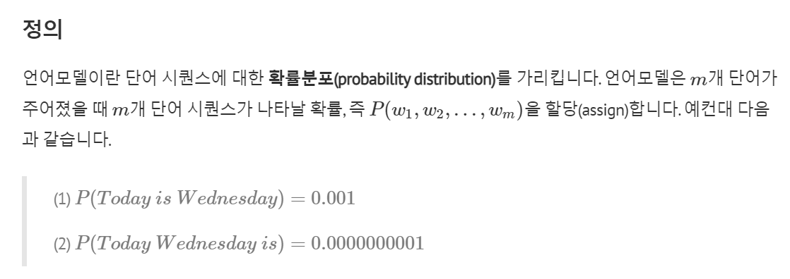
앞의 단어들이 주어졌을 때 다음 단어가 무엇일 확률. 초거대 모델도 이 정의에서 한 발짝도 안 벗어난다.
신경망 이전 — 세어서 맞혔다
확률통계 모형

네 편의 논문에서 시작했다

모델은 글자를 모른다
One-hot · 사전은 여덟 개짜리 예시짧게 줄이고, 비슷한 것끼리 가까이
Embedding · 좌표는 개념 예시자기가 뱉은 단어를 다시 먹는다
Decoder · 종료 토큰이 나올 때까지번역기가 갑자기 문장다워진 그해
2014 논문 → 2016 가을 상용화인코더 LSTM 8층 · 디코더 LSTM 8층 · 그 사이를 잇는 어텐션 한 층.
Google Research Blog 2016.11 · 뉴시스 2016.12.15
카카오 i 번역 서비스 안내
문장 전체를
벡터 하나에 욱여넣는다
LSTM 으로도 GRU 로도 근본 해결이 안 됐다 — 통로 자체가 좁기 때문이다.
사실 네 개가 있었다
인코더는 단어마다 하나씩 만들고 있었다다음 장 — 버린 것을 도로 주워 쓰면 어떻게 되나.

얼마나
관련 있나
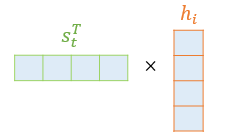
디코더의 현재 은닉상태와 인코더의 모든 은닉상태를 하나씩 내적한다.
내적은 방향이 같은 정도다
6부 코사인 유사도와 같은 이야기
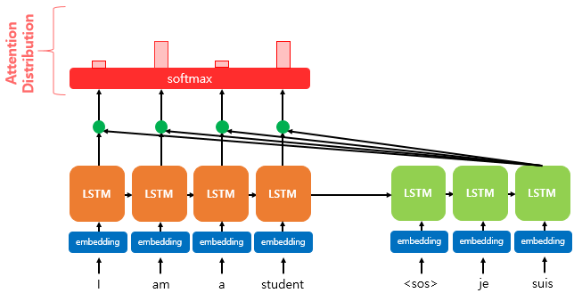
합이 1 인
비율로 바꾼다
점수를 소프트맥스에 넣으면 어느 단어에 얼마나 집중할지의 비율이 나온다.
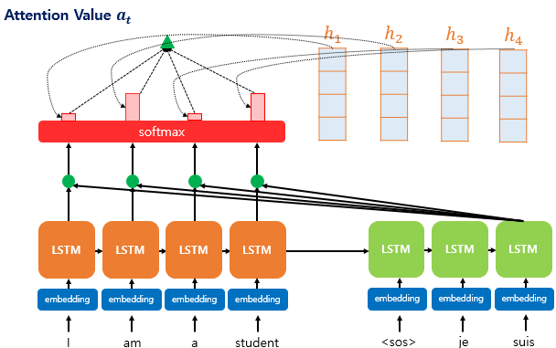
비율만큼
가중합한다
지금 출력과 가장 관계가 높은 입력 정보들이 모인 벡터.
Seq2Seq — 마지막에 한 번
Attention — 출력할 때마다 매번 새로

이어 붙여서
다음 단어를
출력층 은닉상태와 어텐션 값을 연결(concat)해 다음 토큰을 추론한다.
② 비율로 바꾸고
③ 가중합하고
④ 다음 단어를 고른다
순서를 값으로 더해 준다
Positional Encoding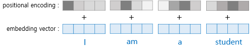

RNN 은 한 칸씩 지나가니 순서가 저절로 들어갔다.
한꺼번에 넣는 순간 순서가 사라진다.
그래서 위치마다 다른 값을 만들어 임베딩에 더한다. 6부 ViT 에서도 같은 장치가 나온다.
어텐션이
세 군데 있다
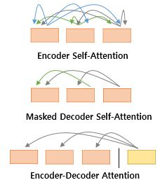
같은 어텐션 계산인데 무엇을 무엇에 대고 재느냐만 다르다.

Query · Key · Value

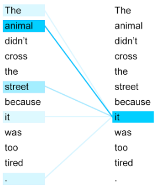
같은 입력에서 셋을 만든다
Wq · Wk · Wv — 이 셋이 학습 대상이다
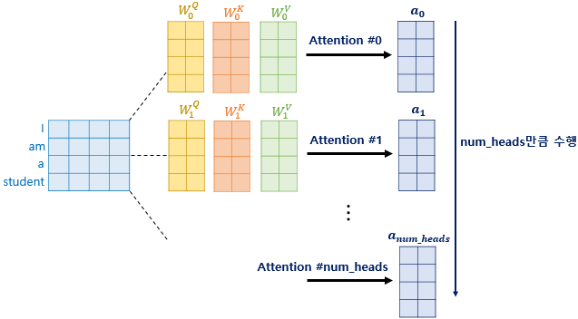
헤드가 늘어난다는 건 문장을 바라보는 관점이 늘어난다는 뜻이다 — 주어 중심, 목적어 중심, 법률적 관점.
모두가 모두를 본 점수표
Attention Score Matrix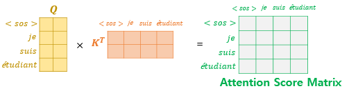
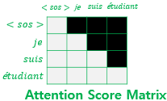
아직 안 나온 단어를 미리 보면 안 된다. 그래서 가린다 — 4부 GPT 는 이 부분만 가져다 쓴다.
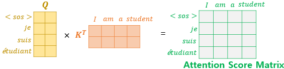
디코더가
인코더를 본다
디코더 벡터가 Query, 인코더 벡터가 Key.
앞에서 본 Seq2Seq 어텐션과 같은 계산이다.

GPT-1 — 두 단계로 나눴다
디코더 12개 · Masked Multi-head Self-Attention 만 사용
다음 단어를 맞히게 한다 — 정답지가 필요 없다

디코더는 고정하고 위에 선형 층만 붙여 과제별로 학습
이 두 단계가 4부의 Pre-training → SFT 로 그대로 이어진다.
키우고, 또 키웠다
GPT-1 → GPT-2 → GPT-3 → GPT-3.5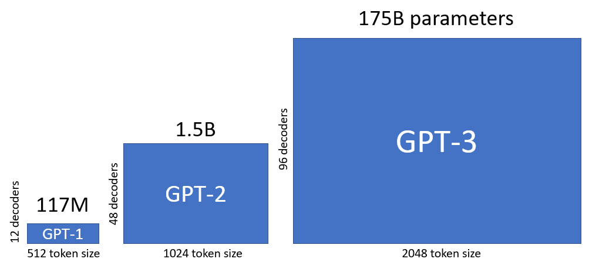

transformer > LLM
그래서 지금의 LLM 은 어떻게 생겼나
디코더만 남기고 키운 것 — 안을 열어 본다
언어 모델은
무엇을 맞히도록 학습되었는가?
답은 하나다 — 다음 토큰. 오늘 나오는 모든 장치는 이 위에 얹힌 것이다.
언어도 시계열이다
시계열 예측을 할 수 있으면 언어를 예측할 수 있겠다 — 그럼 언어에서 한 칸은 무엇인가?
문장을 어떻게 자를 것인가
Tokenizer토크나이저가 바뀌면 모델이 통째로 바뀐다. 번호가 전부 달라지기 때문이다.
한글은 잘게 쪼개진다
직접 넣어 볼 것 — tiktokenizer 류의 사이트같은 내용에 토큰이 더 든다 → 컨텍스트를 더 먹고 비용도 더 든다. 도시 문서가 한글이라는 점이 그대로 비용이 된다.
번호가 몇 번까지 있나
Vocab Size · tiktokenizer.vercel.app 에서 직접 확인할 것다국어를 담으려면 커질 수밖에 없다. 그런데 크게 하면 모델도 커진다 — 그래서 목적에 따라 골라 쓴다.
15만 자리를 몇백 자리로
Embedding — 3주차에 볼 차원 축소3주차 PCA, 이미지의 오토인코더 와 같은 동작이다 — 차원을 줄여 의미만 남긴다.
순서는 따로 넣어 준다
Positional EncodingRNN 은 한 칸씩 지나가니 순서가 저절로 들어갔다. 한꺼번에 넣는 순간 순서가 사라진다.
시계열을
얼마까지 받나
앞에 책 한 권을 넣을 수도, 대화 두세 번밖에 못 넣을 수도 있다.
늘리면 좋지만 — 가중치 개수와 추론 전력이 함께 늘어난다.
깊이와 관점
덴스 층을 많이 쌓을수록 비선형 관계를 잘 잡던 것과 같다.
주어 중심으로 보는 애, 목적어 중심으로 보는 애, 법률적으로 보는 애.
그 한 층 안에서
벌어지는 일
맨 위에서 임베딩 행렬을 전치해 다시 곱하면 vocab 크기의 벡터가 되고, 소프트맥스가 그걸 확률로 만든다.
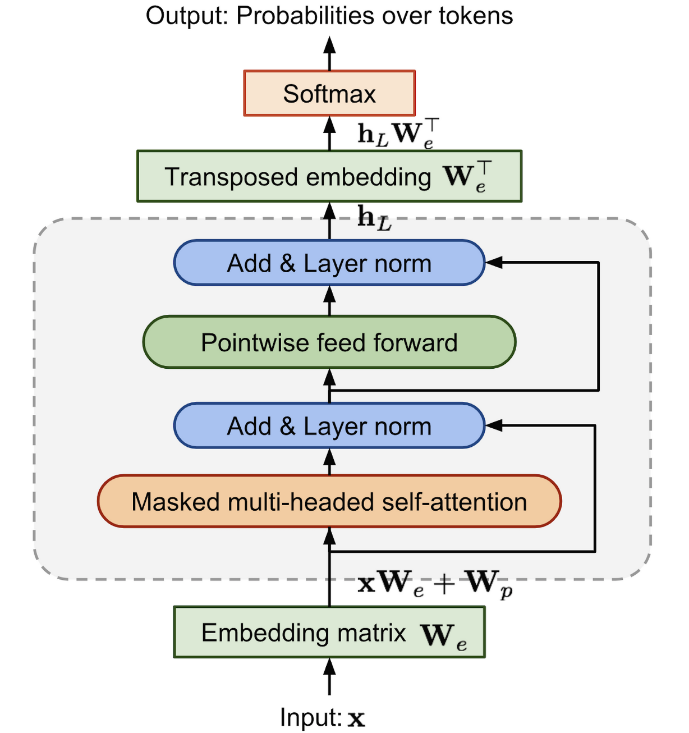
어느 시점부터 비공개다
원 하나가 파라미터 수다
Momentum Works, “LLMs are becoming very large indeed”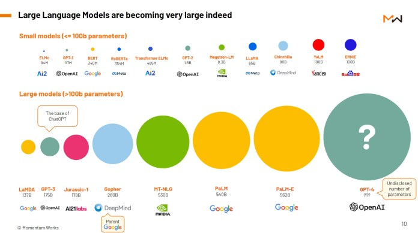
ELMo 9,400 만 → GPT-2 15 억. 노트북에서 돌려 본 크기다.
GPT-3 1,750 억 · Gopher 2,800 억 · PaLM 5,400 억.
GPT-4 는 공개하지 않았다. 추정치는 돌아다니지만 발표된 값이 아니다.
비용은 거의 전부 하드웨어다
강의에서 든 개략치 — 정확한 시세 아님그냥 꽂으면 동시에 안 돌아간다 — 메모리를 공유하는 링크가 따로 필요하다. 그 비용이 대부분이다.
5년 후에도 직주 접근성의 정의가 같을까?
사무실을 덜 짓는다는 신호가 나온다.
사람 대신 전력과 냉각을 담는 건물이 늘어난다.
전력 인프라부터 용도지역까지 — 무엇을 다시 물어야 하는가.
반대 방향 — 작게, 그리고 몸으로
NPU · 경량화 · Physical AI학습에는 아직 못 쓰고 추론(inference) 에 쓴다 — 전력이 적게 들고 빠르다.
둘 다 “추론” 이지만 다르다
학습이 끝난 모델에 입력을 넣어 토큰 하나를 뽑는 그 계산 전 과정.
뉴럴넷 전반에서 오래 써 온 말이다.
답을 내기 전에 길게 생각하는 과정을 정답지로 삼아 학습시킨 것.
5부 SFT 에서 자세히 — 같은 프리트레이닝 모델에서 갈라진다.
architecture > training
구조를 봤으니, 이제 학습이다
사전학습 · 지도 미세조정 · 정렬 — 세 단계
세 단계 — 다른 건 데이터의 출처다
뒤의 둘을 묶어 Alignment 라고 부른다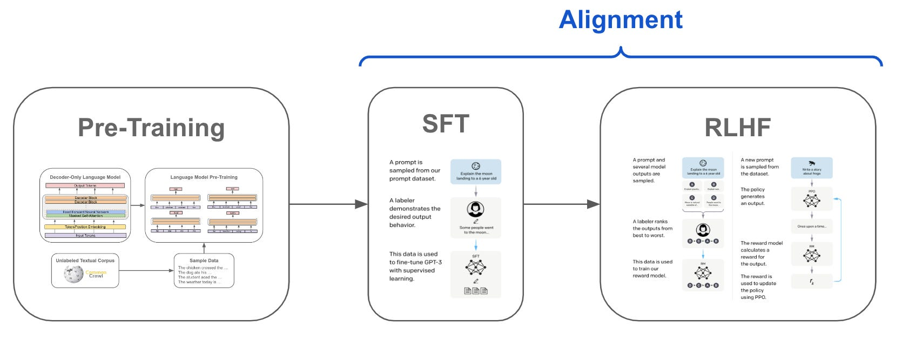
이 용어들은 곧 실무 용어가 된다 — 시중은행은 이미 LLM Ops 를 전산에 얹었다.
정답지를 만들 필요가 없었다
Masked Learning가린 자리의 답을 이미 알고 있다. 라벨링 없이 무제한의 학습 데이터가 만들어진다.
가리고 맞히기는 언어만의 기법이 아니다
단어를 가리고 맞힌다 — 오늘
패치를 가리고 복원한다 — OCR 을 없앴다
빠진 칸을 채운다 — 부동산 시세 모델의 실제 기법
데이터가 충분히 모이면 마스킹 그 자체가 엄청난 학습 데이터를 만들어낸다.
“압축했다”
는 표현
반복되는 것을 인덱스로 줄이는 것이 압축이다.
프리트레이닝 모델을 직접 돌려 보면
28 GPT.ipynb · GPT-2 는 아직 공개돼 있다우리가 쓰는 챗GPT 와는 아무 상관이 없다. 그냥 확률 1등 토큰을 이어 붙일 뿐이다.
원하는 방향으로
밀어 준다
Supervised — 정답을 알고 하는 학습. 우리가 계속 해 온 그것이다.
그 열 번 더가 파인튜닝, 처음 열 번이 프리트레이닝이다.
정답지는 그냥 대화다
AI2 · OLMo 의 공개 SFT 데이터셋
“이렇게 물으면 이렇게 답해라”를 통째로 정답지로 준다.
6부에서 API 로 프롬프트를 넣을 때 정확히 이 형식으로 넣는다.
같은 뿌리에서 갈라진다
무엇으로 파인튜닝하느냐요즘 서비스는 여러 모델을 같이 쓴다 — 전략을 짜는 애와 대화체로 답하는 애가 따로 있다.
“어떻게든 답을 한다”
누구의 직장을 물어보면 없는 말도 만들어낸다.
사람이 채점하고, 채점기를 학습한다
RLHF — 사람이 개입하는 건 앞쪽 한 번뿐이다
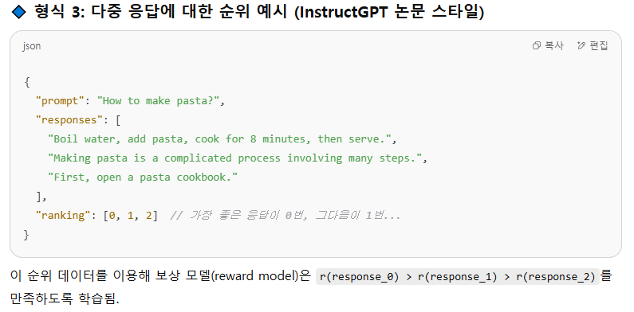
같은 질문에 답을 여러 개 만들고 사람이 순위를 매긴다.
이후로는 사람 없이 그 채점기가 무한히 채점한다.
우리가 아는 챗봇의 습관은 대부분 여기서 생겼다
역할을 부여하면 그대로 따르도록 보상을 줬다.
모른다고 답한 쪽에 더 좋은 점수를 줬다.
투자 권유·위험한 질문에 계속 빵점을 매겼다.
“도움이 되었길 바랍니다” 같은 습관도 보상의 결과다.
GPT-2 까지는 없었다. 지금은 이것 없이 서비스를 열지 않는다.
성능은 좋은데
못 쓴다
내부 자료를 올려 보고서를 쓰게 했다가 감사에 걸린 사건 이후, 도메인을 막는 일이 수시로 생긴다.
그래서 사내에서 돌아가는 것을 원한다.
필요한 전문가만 켠다
Mixture of Experts라우터는 LSTM 의 시그모이드 스위치와 같은 아이디어다. 데이터로 시키지 않았는데 분야별로 갈라져 학습됐다.
학습은 더 느리게, 추론은 훨씬 빠르게
라우터까지 함께 학습해야 한다.
일부만 켜지니 전력과 속도가 함께 좋아진다.
어느 쪽인지 밝히지 않은 수치는 강의에서 쓰지 않는다.
사람 없이 채점할 수 있는 것들
RLVR — 검증 가능한 보상이걸 공개하고부터 수학과 코드 성능이 급격히 올라갔다. 지금 코드 제너레이터가 잘 되는 이유다.
큰 행렬 대신 작은 것 둘
LoRA — Low-Rank Adaptation성능은 조금 떨어지지만 맥락은 맞게 간다. 이미지의 스테이블 디퓨전에서도 같은 기법을 봤다.
그 소수점이
다 쓰일까?
시그모이드에 넣으면 0 아니면 1로 나오는데, 그 사이 수천만 가지가 정말 다 필요한가.
가중치를 0/1 로만 두는 이진화 실험까지 나왔다.
training > using
다 만들어진 모델을 어떻게 쓰나
프롬프트로 시키고, 모르는 것은 찾아서 넣어 준다
모델이 모르는 것을
어떻게 알게 하는가
가중치를 다시 학습시킨다 — 돈도 시간도 데이터도 없다.
입력을 고친다. 프롬프트 · RAG · 도구 호출 · MCP.
마지막 슬라이드가 이 질문에 답하지 못하면 오늘 수업이 빈 것이다.
지식이 오는 곳은 둘뿐이다
프리트레이닝·SFT·RLHF 를 거치며 들어갔다. 고정이고, 바꾸려면 다시 학습해야 한다.
지금 이 요청에만 유효하다. 내가 통제할 수 있는 유일한 지식이다.
오늘 하는 모든 일은 두 번째를 늘려 첫 번째의 약점을 덮는 것이다.
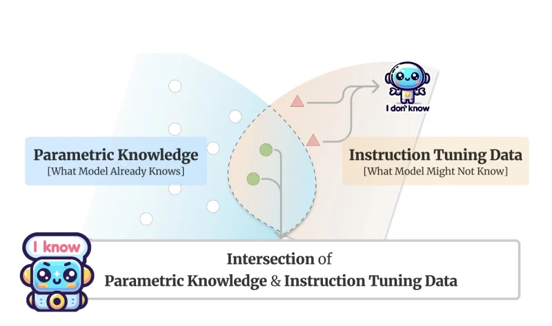
“I know”
가 서는 자리
오늘 하는 일은 저 겹치는 영역을 억지로 넓히는 것이다.
모델의 시계는 멈춰 있다
Knowledge Cutoff도시 쪽은 특히 심하다 — 법령이 바뀌고 계획이 갱신되는데 모델은 학습 시점에 멈춰 있다.
원인의 하나는
아주 기계적이다
확률표를 뾰족하게 할지 평평하게 할지
누적 확률 몇 %까지를 후보로 남길지
그리고 남은 후보들 중에서 랜덤으로 하나를 뽑는다.
같은 질문을 다섯 번씩
Q. 한국건설기술연구원에 대해서 한 문장으로 설명해줘연구에 쓰려면 오른쪽이어야 한다. 단, 오른쪽이 정답이라는 뜻은 아니다 — 재현될 뿐이다.
온도를 올린다 = 순위를 무너뜨린다
실제 로짓으로 계산한 상위 6 토큰
1 등 0.86 — 사실상 혼자 뽑힌다
1 등 0.71 — 가끔 2 등이 들어온다
1 등 0.19 — 후보가 확 늘어난다
거의 평평 — 순위가 의미를 잃는다
같은 K 인데 반대 방향으로 틀린다
Top-K 를 4 로 고정했을 때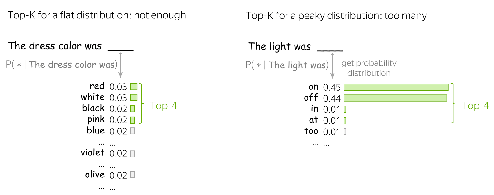
색깔이 다 0.02~0.03. Top-4 는 똑같이 그럴듯한 blue·violet·olive 를 잘라 버린다.
on 0.45 / off 0.44 로 사실상 둘뿐인데 0.01 짜리까지 후보로 넣는다.
개수를 고정하지 말고 누적 확률 90 % 가 찰 때까지만 남긴다 — 분포가 알아서 개수를 정한다.
진짜 입력은
채팅창이 아니다
바꾼 것은 system 한 줄뿐
user 는 셋 다 “안녕 넌 누구니?”반말로 대답한다.”
실습에서 만질 곳이 정확히 이 한 줄이다 — 연구에서는 이게 통제변수가 된다.

처음부터
있던 게 아니다
RLHF 를 적용하다 보니 모델의 역할을 미리 정해 줄 필요가 생겼고, 그래서 system 이라는 role 이 만들어졌다.
프롬프트가 점점 프로토콜이 되어 가는 과정이다.
시스템 프롬프트
RLHF 가 “이건 반드시 따르라” 고 학습시킨 자리여기서 한 발 더 — 역할 말고 정보를 넣으면 어떻게 되나?
같은 질문, 다른 답
차이는 시스템 프롬프트에 자료를 실었느냐뿐모델이 똑똑해진 게 아니다. 답할 재료를 줬을 뿐이다.
RAG — Retrieval-Augmented Generation
앞 실험은 자료를 손으로 넣었으니 아직 “검색” 부분이 빠져 있다.
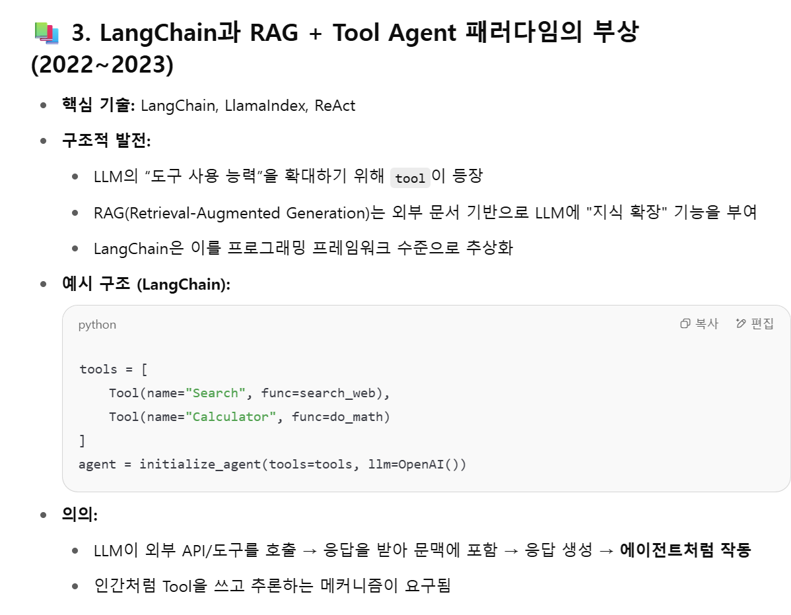
지식 확장과
도구 사용
이 왕복이 생기는 순간 챗봇이 아니라 에이전트다.
여러분이 지금 쓰는 코딩 어시스턴트가 정확히 이 구조다.
전부 넣을 수는
없다
577 페이지짜리 도시기본계획을 통째로 넣고 분석해 달라고 할 수 없다.
어떻게 고르나 — 다음 시간.
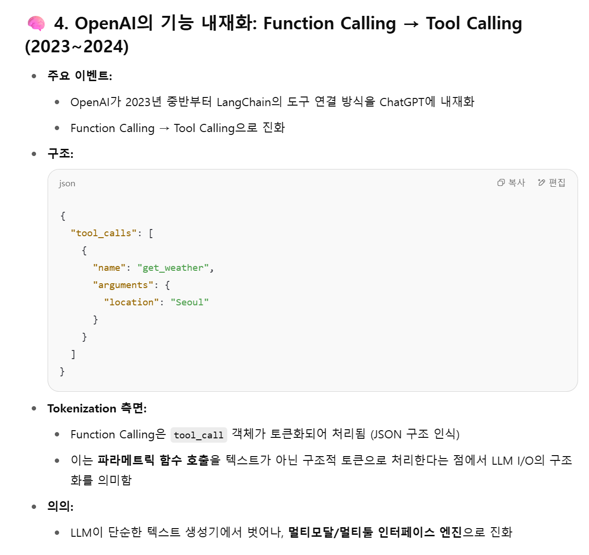
프레임워크가
모델 안으로
LangChain 이 밖에서 하던 도구 연결을 OpenAI 가 모델에 내재화했다.
tool_call 은 모델이 지어낸 문장이 아니라구조화된 토큰으로 처리된다.
LLM 의 입출력이 자연어에서 구조체로 넘어간 지점이다.
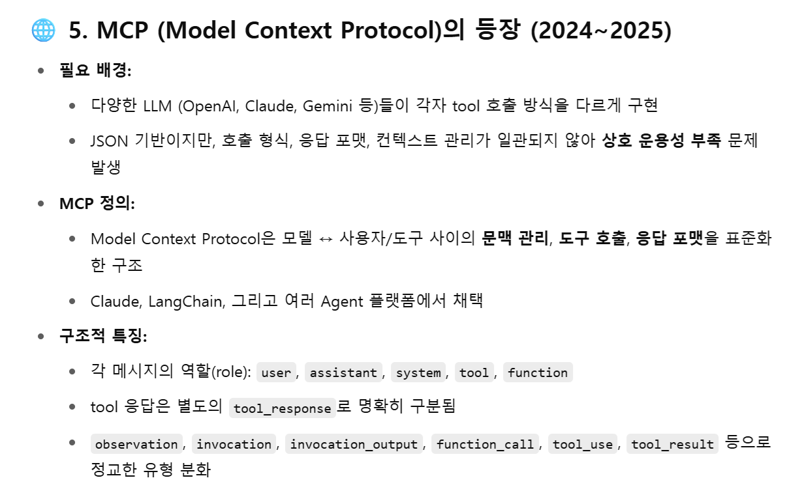
도구 하나에
세 벌을 만들 순 없다
OpenAI · Claude · Gemini 가 각자 다른 형식으로 도구를 불렀다. 다 JSON 인데 필드도 응답도 다르다.
user assistant system 에tool function 이 붙고, tool 응답은 tool_response 로 따로 구분된다.표준이 생기면 붙일 수 있다
MCP 의 의의와 기술적 특징
호출 형식을 하나로 통일했다. 이미 있던 표준을 가져다 쓴 것이다.
스트리밍이 되는 두 가지 통신 방식. 답이 나오는 대로 흘려보낸다.
stdio 로 설치하면 내 PC 안에서 돈다 — 사내 데이터를 안 내보내고 도구를 붙일 수 있다.
사람이 SQL 을 쓰지 않는다
Data Hub · 온톨로지 레이어 사례“서울특별시 강남구 역삼동에 2025년도에 창업한 사업자 홍두선 대표님이 운영하는 사업자 목록과 주소 좀 구해 줄래?”
“2025년에 강남구 대치동에서 창업한 사업자를 찾아주고 개업시기, 사업장명, 주소, 국세청 업종분류를 알려줘.”
도시 데이터에 LLM 을 붙이는 일의 8 할은 모델이 아니라 데이터 쪽 구조를 정리하는 일이다.
프롬프트가 프로토콜이 되기까지
2021 → 2025사람이 말로 쓰던 것이 기계가 파싱하는 구조체로 계속 굳어져 왔다.
채팅창 말고 API 로
채팅창에서는 못 하는 일 — 연구에서 통제 변수가 된다.
낮게 고정해야 같은 입력에 비슷한 출력이 나온다.
계획서 170 개, 민원 수천 건 — 손으로는 못 한다.
토큰이 곧 돈이다 — 한글이 왜 비싼지 여기서 체감한다.
만 원어치는 써 봐야 감이 온다 — 자꾸 시도해 보는 것이 실력이 된다.
하나만 골라 이야기해 보자
내 연구에 쓴다면 temperature 를 얼마로 두겠는가. 그 이유는?
자료를 실어 줬는데도 모델이 그 자료와 다른 말을 하면, 어떻게 알아채겠는가?
내가 다루는 도시 데이터에 MCP 를 붙인다면 어떤 도구를 먼저 만들겠는가?
using > agency
모델이 스스로 도구를 쓰기 시작하면
그때부터 우리가 만들어야 하는 것은 모델이 아니라 그 바깥이다
모델은 에이전트가 아니다
모델이 하는 일은 텍스트를 받아 텍스트를 내는 것 하나뿐이다. 파일을 읽는 것도, 명령을 실행하는 것도 모델 바깥의 프로그램이 한다.
하네스란 모델이 아닌 모든 것이다
모델을 감싸는 코드 · 설정 · 실행 로직 전부.
우리가 바꿀 수 없다. 학습시키지도, 고치지도 않는다.
우리가 전부 정한다. 그래서 여기가 엔지니어링의 대상이다.
harness — 말에 씌우는 마구. 말을 바꾸는 일이 아니라 마구를 바꾸는 일이다.
Vivek Trivedy, The Anatomy of an Agent Harness, LangChain, 2026-03-10
동심원
세 겹이다
요청문이 아무리 좋아도 어디까지 할 수 있는지는 바깥 겹이 정한다.
느리게 만드는 게 아니라, 고삐를 쥐는 것

써 본 사람이라면 겪은 세 장면
다른 일을 한다
한 페이지를 고쳐 달랬는데 메뉴를 갈아엎는다. 없는 API 를 지어낸다.
일을 한다
정리한다며 파일을 지우고, 실패하는 테스트를 지운다.
결과가 다르다
같은 요청에 구조가 매번 다르고 문서는 옛것, 코드는 새것이다.
무엇을 하면 안 되고, 무엇을 지키고, 무엇을 이어갈지는 우리 프로젝트의 사정이다. 모델이 알 수 없다.
하네스가 하는 세 가지 일
앞 장의 세 장면과 하나씩 짝제어는 원하는 대로 움직이게 하는 게 아니다. 잘못된 방향으로 가지 못하게 하는 것이다.
실제로 오가는 것
tool_use → 실행 → tool_result루프는 언제 멈추나
도구를 더 부르지 않고 글로만 답한다.
중단하거나 방향을 다시 준다.
권한 규칙에 걸려 그 도구를 못 쓴다.
컨텍스트가 차서 요약해 이어 붙인다.
종료 조건이 없으면 같은 실패를 반복하며 돈다 — 최대 반복과 예산 한계도 하네스가 정한다.
CLAUDE.md
저장소 루트에 두면 매 턴 컨텍스트에 자동으로 들어간다. 같은 말을 다시 하지 않아도 된다.
① 이 프로젝트가 무엇인지
② 어떤 규칙을 지켜야 하는지
③ 실패해서 알게 된 것
같은 파일을 세 가지 일로 다시 본다
geo-chain 저장소문서와 코드가 어긋나면 환경 제공이 무너진다. 그래서 감사 스킬이 환경 쪽에 있다.
사람은 어디에 서는가
매 단계 승인도, 방치도 아니다사람이 쓴 코드도 믿어서 합치지 않는다 — 테스트와 리뷰를 통과해서 합친다. 같은 기준을 적어 두는 것뿐이다.
스킬과 MCP
언제 쓰는지, 어떤 순서로 하는지, 무엇을 확인하고 끝내는지를 마크다운으로 적어 둔다.
새 도구를 붙이는 게 아니라 이미 있는 도구를 쓰는 순서를 정하는 것이다.
사내 API, 데이터베이스, 디자인 시스템을 표준 규약으로 도구화한다.
앞에서 본 그 initialize · tools/list · tools/call 이 여기서 쓰인다.
디자인 시스템은 이미 세 덩어리로 있었다
사람을 위해 만든 표준이 그대로 에이전트를 위한 표준이 된다.